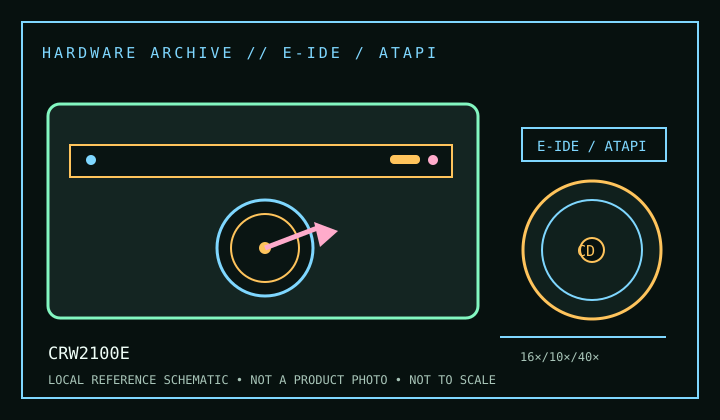

[ CD-R AND CD-RW DRIVES // IDENTIFIED MODEL ]
Yamaha CRW2100E
Internal E-IDE/ATAPI CD-R/RW model with maximum rates of 16× CD-R write, 10× CD-RW rewrite and 40× read. Do not confuse the “E” host interface with SCSI or external members of the CRW2100 family.

IDENTIFICATION: Confirm the manufacturer label, complete model suffix, interface and firmware revision against the cited manual before installation or archival use. Ratings are maximums; actual performance depends on media, mode, host and software.
Documented specifications
| Subcategory | CD-R and CD-RW drives |
|---|---|
| Exact model | CRW2100E |
| CD-R write | 16× |
| CD-RW rewrite | 10× |
| CD-ROM / CD read | 40× |
| Recorded/read formats | CD-R and CD-RW write; CD-ROM/CD-DA and other compact-disc read formats listed by Yamaha, including CD-ROM XA, CD-Extra, Video CD and Photo CD. Actual access depends on disc/session format and application. |
| Recording modes | Disc-at-Once, Track-at-Once, Session-at-Once and packet-writing capabilities are documented for the series. Software and media determine available modes and rated recording speed. |
| Interface / mechanics | Internal E-IDE/ATAPI; half-height 5.25-inch bay device. Follow the manual’s ATA cabling and master/slave configuration and avoid sharing a channel in a way that overloads the host. |
| Host and operating-system compatibility | Needs a working ATAPI driver and compatible CD-authoring package. The model is from the Windows 9x/NT-era hardware ecosystem; use period software on a supported legacy host when reproducing original workflows. Current OS recognition through a bridge does not guarantee recording or packet-writing support. |
| Firmware / revision notes | Firmware must match the CRW2100E model and hardware revision; no cross-flashing from CRW2100S/SX. Confirm drive inquiry and consult the exact Yamaha release notes before updating. Rated speeds are maximums and depend on media/recording mode. |
Compatibility & preservation notes
- Needs a working ATAPI driver and compatible CD-authoring package. The model is from the Windows 9x/NT-era hardware ecosystem; use period software on a supported legacy host when reproducing original workflows. Current OS recognition through a bridge does not guarantee recording or packet-writing support.
- Firmware must match the CRW2100E model and hardware revision; no cross-flashing from CRW2100S/SX. Confirm drive inquiry and consult the exact Yamaha release notes before updating. Rated speeds are maximums and depend on media/recording mode.
- For an imaging or recording session, log the exact drive and firmware, interface/controller, operating system, application version, media identifier, selected mode and any read/verification errors. Keep checksummed image copies and logs.
- Handle discs at the edge or center hole and store in cases in a cool, dry place away from direct sunlight. Avoid adhesive labels, abrasive cleaning and undocumented solvents or polishing.
Read support is not write support. A format listed for this drive does not guarantee every disc revision or copy-protection scheme will work.
Sources
- Yamaha CRW2100E owner’s manual, Internet ArchiveArchived manual scan for model setup, supported formats, recording modes and specifications.
- Yamaha CRW2100E owner’s manual, ManualsLibAlternate manual archive; use the exact model’s technical-specification and compatibility sections.
- Library of Congress — CD-R and DVD-R/RW longevityPreservation guidance on recordable optical media; not model-specific.